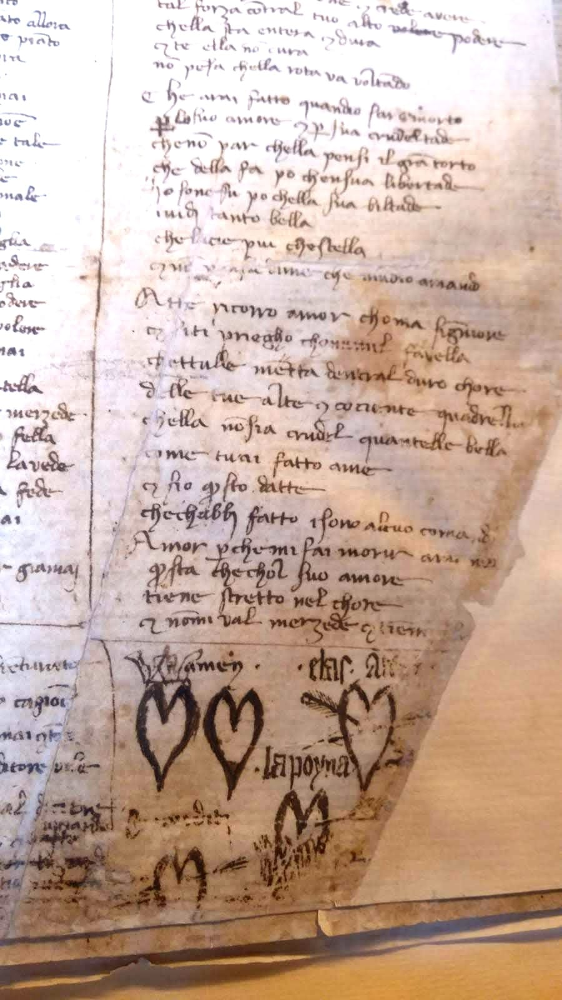
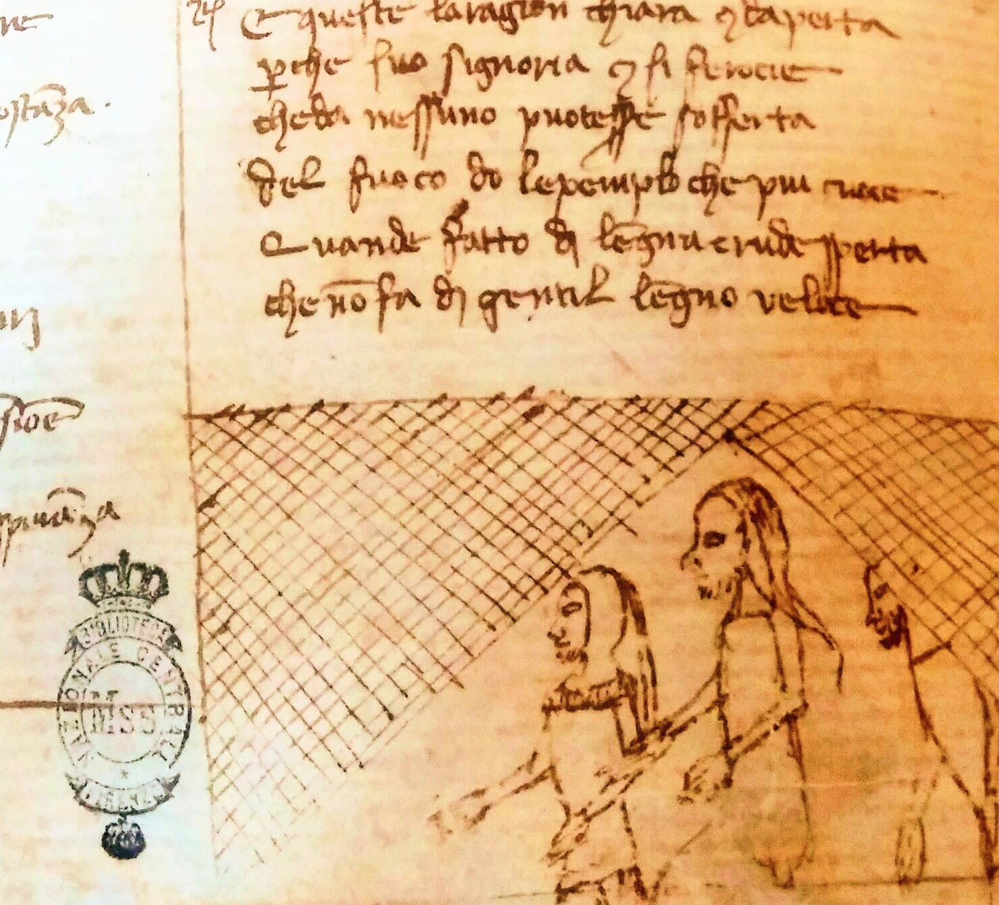
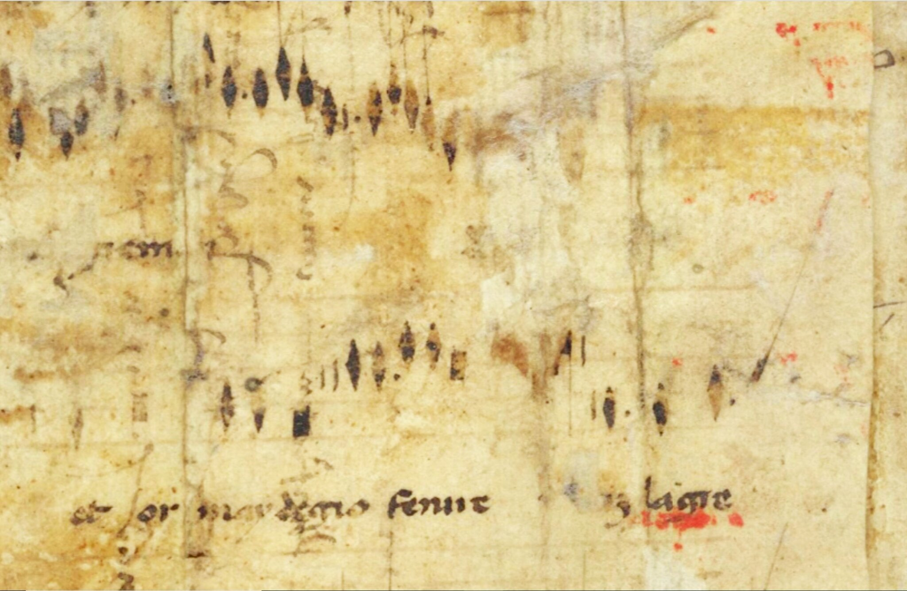

Progetto Marginalia
Il panorama musicale dell’Italia tra la fine del Trecento e l’inizio del Quattrocento è stato ricostruito sulla scorta dei pochi, grandi codici musicali sopravvissuti al tempo. Ne è uscita, agli occhi di molti, una storia agita da pochi protagonisti, che sembrano muoversi in un deserto sonoro, o quasi: a fronte dei centri scrittori maggiori (come Firenze), poco o nulla è stato detto, cantato e suonato delle periferie, delle tracce musicali nascoste ai margini dei manoscritti monumentali e delle grandi città.
Il ‘canone’ scaturito da questa operazione di sintesi è diventato il repertorio comunemente praticato da chi esegue la musica medievale oggi. Con Marginalia vogliamo dare voce e suono a frammenti musicali riscoperti, spesso in maniera del tutto casuale, nelle coperte degli antichi registri notarili, nei fogli di rinforzo degli incunaboli, in fascicoli di codici smembrati e dispersi. Alcuni frammenti trasmettono brani musicali intatti, in altri casi siamo intervenute a ricostruire voci mancanti o a colmare lacune testuali o musicali; talvolta abbiamo scelto la via della diminuzione strumentale, sempre con l’intento di instaurare un via di comunicazione tra ‘noi’ e ‘loro’ creando qualcosa di nuovo, più che con la vana illusione di restaurare un’opera perduta. La particolarità del repertorio risiede nel fatto che, a fronte della generale assenza di contesto (della maggior parte dei brani non si conosce né l’autore né la provenienza geografica originaria, quindi gli studiosi sono stati in grado di determinare soltanto l’epoca di composizione e poco altro), l’interprete è stimolato a inserirsi come terzo elemento in un dialogo ideale tra il compositore e il copista, manipolando il materiale musicale senza tuttavia tradirne la natura, cioè attenendosi alle informazioni note circa le pratiche performative dell’epoca.
La mappa ideale dei nostri frammenti traccia un itinerario tra le pievi e le abbazie dell’Appennino centrale, un crocevia di mondi tra Umbria, Toscana meridionale, Abruzzo, Marche e l’antica Romagna. Il mosaico che ne scaturisce rivela un vero e proprio tesoro di varietà, dalla polifonia di sapore arcaizzante fino alle composizioni francesi o di ispirazione franco-fiamminga, che testimoniano la diffusione del cosiddetto ‘stile internazionale’ anche nei centri minori: questo dettaglio è interessante perché contribuisce a testimoniare l’atmosfera cosmopolita che permeava la cultura italiana a cavallo tra i due secoli, anche grazie alle vicende relative allo scisma avignonese, che portarono ad uno scambio artistico di respiro “europeo”.
Nel nostro programma, il mondo della polifonia liturgica si interseca, come avviene d’altronde nelle grandi raccolte arsnovistiche, con la poesia profana intonata a tema amoroso; come trait d’union, la lauda polifonica, genere d’elezione dei ceti urbani, in cui musica liturgica e secolare si incontrano nella pratica del contrafactum.
Galleria fotografica





Estratto
Marginalia — Festival dell'Ascensione, Milano, 4 maggio 2025 → Libretto di sala →